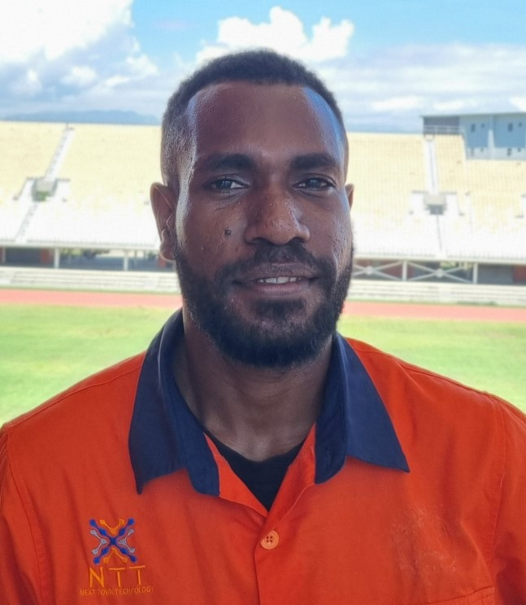

About Me
I'm an Advanced Diploma in Information Technology (APDIT) graduate from Datec - New Horizon Computer Learning Centers.
My educational background and experience have equipped me with a strong foundation in various technologies, including:
- C & C++
- HTML
- JavaScript & DHTML (Dynamic Web Development)
- Java Programming
- Oracle Database Administration
I'm currently employed as a Technical Officer at Next Town Technology. In this role, I've been involved in various tasks, including:
- Providing technical support to customers for internet and cable services, which includes troubleshooting and resolving connectivity issues.
- Conducting installations and configurations of cable modems, VSAT, and other network devices like routers & switches for our clients.
- Effectively communicating technical issues and solutions to both technical and non-technical audiences.
- Engaging in research and development of new technology solutions.
- Maintaining accurate records of service requests and technical issues.
I'm passionate about new technology and its application, and I'm always excited to take on new challenges and continue my professional growth.